AI审图
两版图纸逐页对照：左边按图号列出每页的差异处数，中间新旧两版并排，新增、删除、改动的内容用不同颜色框出，下面是差异清单。另有图纸与工程量清单对量、设计说明条文核查两栏。
沿建筑产业链，从设计、施工到运营，做了 28 个数字化工具原型。
均为原型，画面用的是示例数据，没有在真实业务中使用。本页只供观看，不提供在线操作。

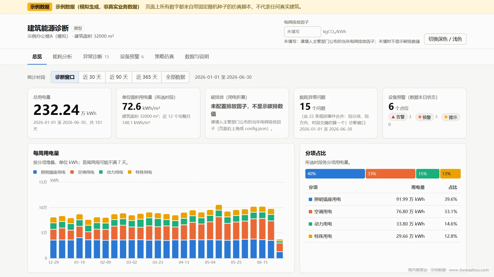
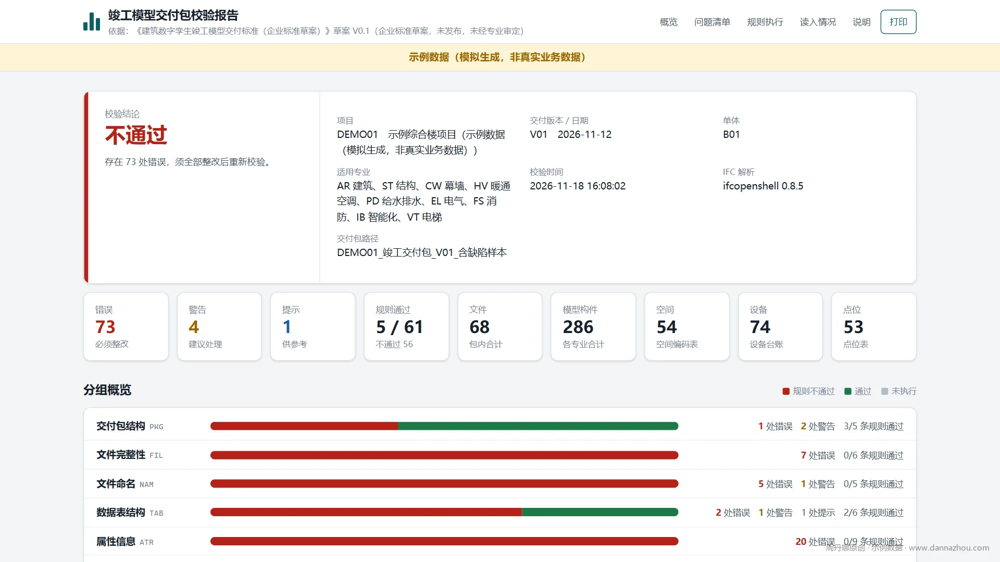
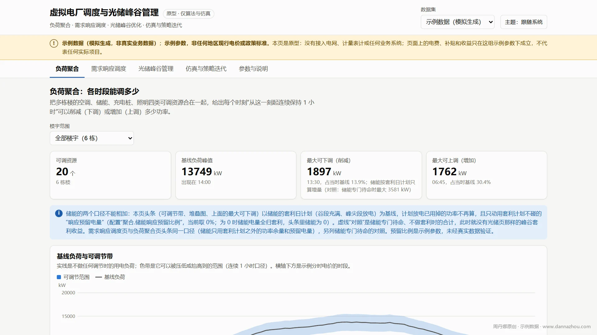

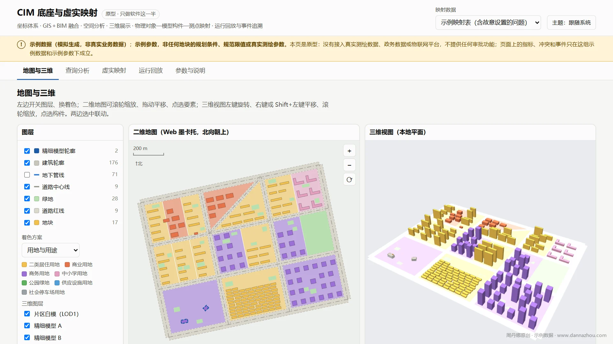

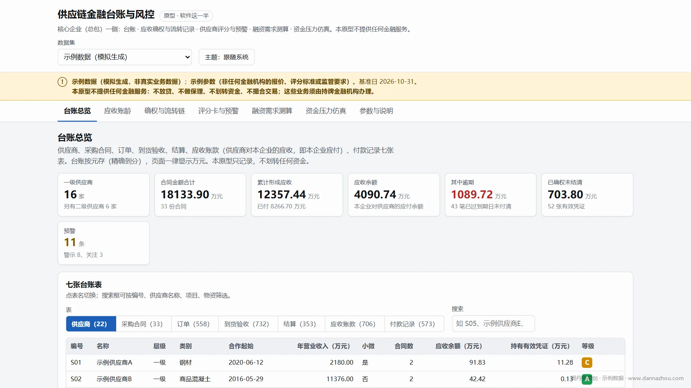

两版图纸逐页对照：左边按图号列出每页的差异处数，中间新旧两版并排，新增、删除、改动的内容用不同颜色框出，下面是差异清单。另有图纸与工程量清单对量、设计说明条文核查两栏。
同一份结算的批复、送审、一审、二审四版清单逐条比对。图为概览：各版金额、累计核减、超计量项和漏报项，下面把每一轮核减拆成量差、价差、整项核减和审增项。
一栋示例办公楼半年的分项用电：总用电、单位面积用电、能耗异常问题和设备预警的条数，下面是每周分项用电和分项占比；异常诊断、设备预警、策略仿真各有一栏。
依据一份竣工模型交付标准草案，自动校验交付包。图为一份故意植入缺陷的示例交付包的报告：结论为不通过，问题按错误、警告、提示计数，规则按交付包结构、文件完整性、文件命名、数据表结构等分组列出。
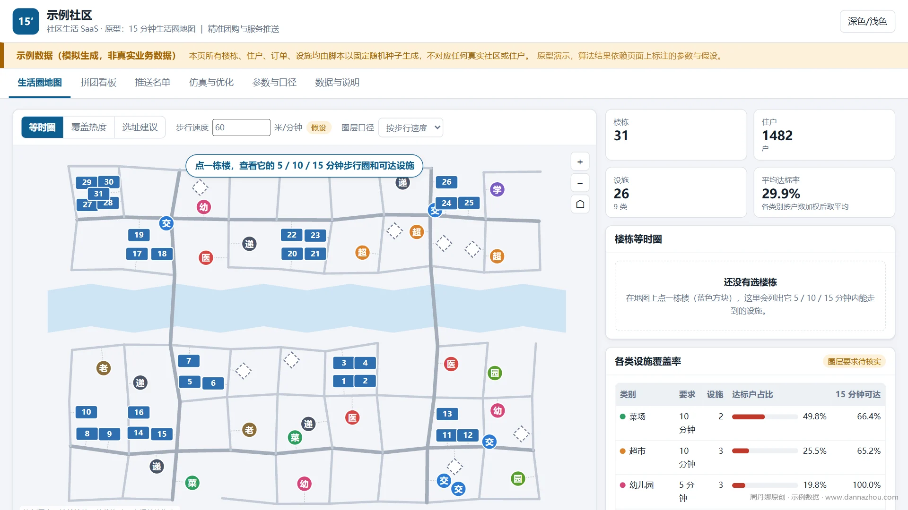
示例社区的生活圈地图：楼栋和菜场、超市、幼儿园、公交站等设施标在平面上，点一栋楼可查看它的步行可达范围，右侧按类别列出设施覆盖情况。

再生资源交易指数：按月汇总示例成交记录算出综合指数并画出走势，右侧拆出各品类对当月变动的贡献。
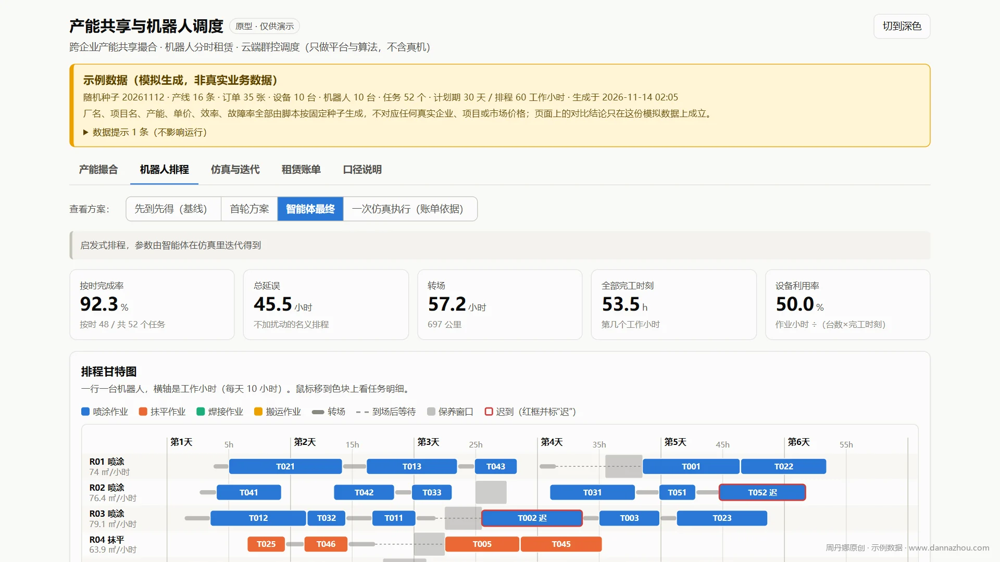
机器人排程：每台机器人一行，横轴是工作小时，色块区分喷涂、抹平、焊接、搬运等作业和转场，迟到的任务单独标出。另有产能撮合和租赁账单两栏。
把几栋示例楼宇里的空调、储能、充电桩、照明等可调资源合在一起，逐个时段算出能往下调、往上调多少功率；需求响应调度、光储峰谷管理各有一栏。
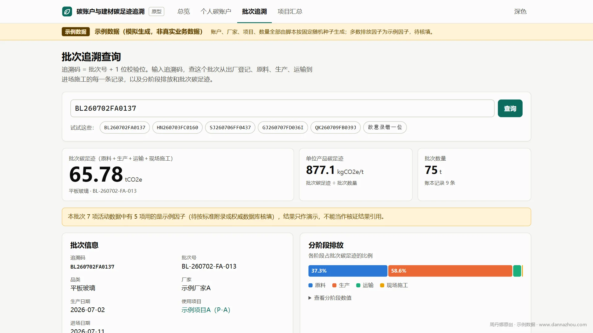
建材批次追溯：输入追溯码，查出这一批材料的批次信息、使用项目，以及原料、生产、运输、现场施工各阶段在碳足迹里的占比。另有个人碳账户和项目汇总两栏。
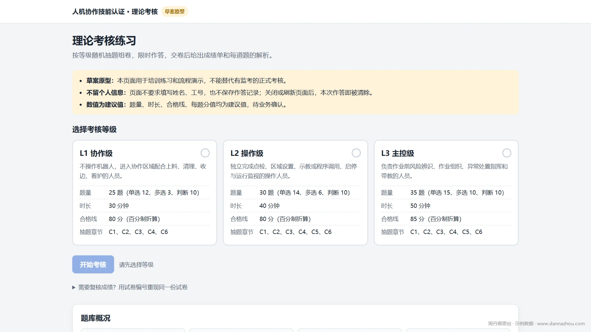
人机协作技能的理论练习页：按协作级、操作级、主控级三个等级随机抽题组卷、限时作答，交卷后给出成绩和每道题的解析。页面注明只用于培训练习和流程演示。

在一块示例地块的退线范围内自动排布楼栋，算出容积率、建筑密度、绿地率等指标，并逐条列出与规划条件的对照；另有日照分析、三维体量和文字生成 IFC 模型几栏。

在合成的缺陷图片上做视觉检测：彩色区域是检测出的缺陷，虚线框是外框，右侧逐处列出类别、置信度和量测结果。另有评估指标、标注工具和住宅体检几栏。
示例桥梁、隧道、基坑等监测对象的测点画在一张图上：拖动时间条回放，测点颜色随告警级别变化，上方汇总在用测点、告警和未闭环工单。
城市片区的二维地图和三维白模并排，可按用地性质着色、开关图层，点选的要素在两边联动；查询分析、虚实映射和运行回放各有一栏。
几个示例厂区的设备数据汇到一张总控看板：设备在线率、设备综合效率、用电、告警和上行续传，下面分厂区列出产量与能耗。数据来自本机的模拟设备。
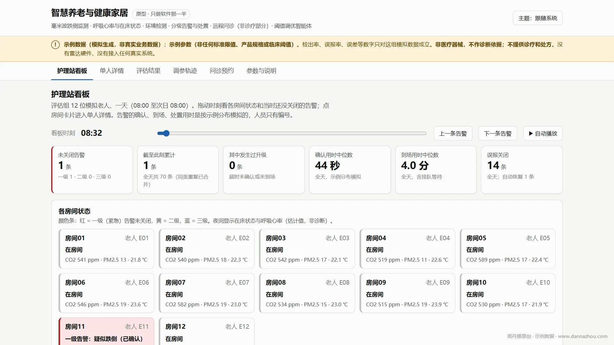
护理站看板：拖动时间条回放一天里各房间的在房状态和环境读数，有告警的房间标红，下面列出未关闭的告警。
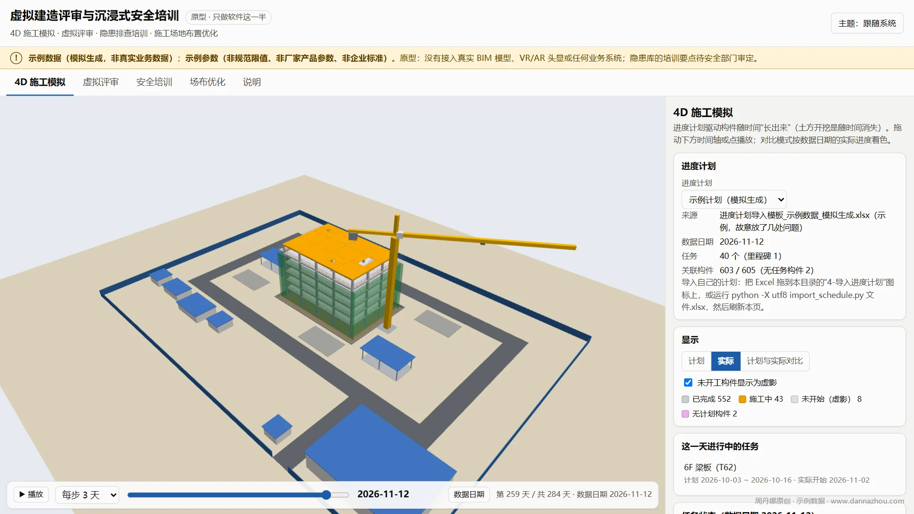
按进度计划驱动的 4D 施工模拟：拖动时间轴，三维模型里的构件按计划或实际进度逐步出现，右侧列出当天在施的任务和任务状态。另有虚拟评审、安全培训和场布优化几栏。

代办工单看板：工单按材料核验、退回补正、待派单、代办中等状态分列，临近超时和已升级的工单单独标出。另有车位预约、停车计费和洗车排队几栏。

园区资产地图：光伏、储能、充电桩、热泵按位置画在示意平面上，颜色表示健康等级，红点标出有未完成工单的资产；资产台账、运维工单、能碳台账各有一栏。
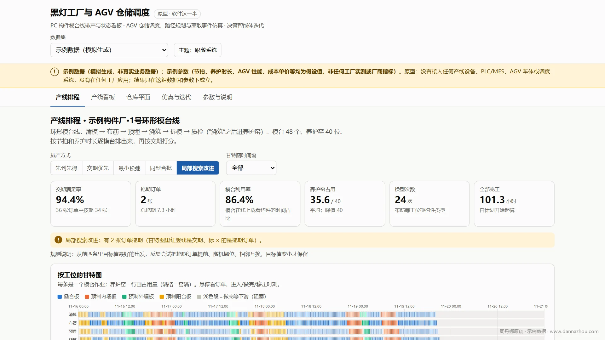
示例构件厂环形模台线的排产：按工位和按订单画出甘特图，可在先到先排、交期优先、同型合批等几种排产方式之间切换；另有产线看板和仓库平面几栏。
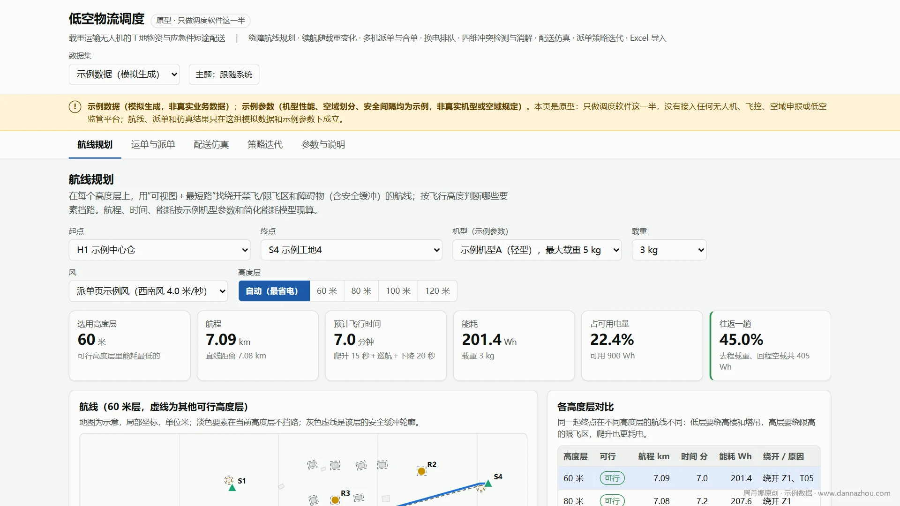
在示例片区里规划无人机航线：选起点、终点、机型和载重，航线绕开禁飞区和障碍物，右侧把几个飞行高度层的航程、用时和能耗列表对比。
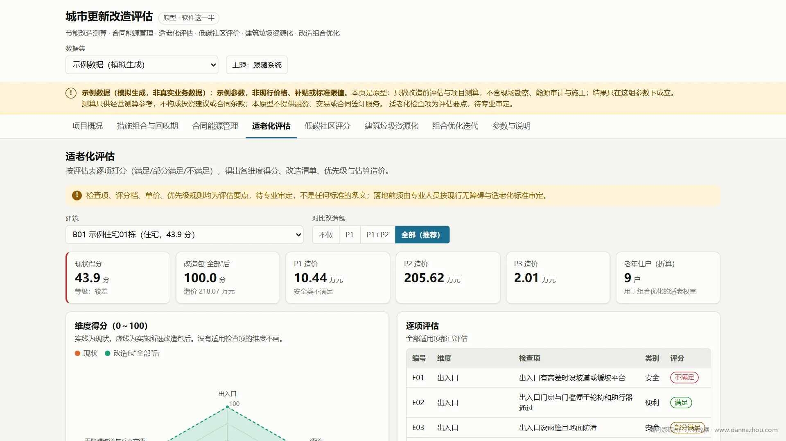
适老化评估：对一栋示例住宅按出入口等维度逐项检查打分，对比改造前后的得分，并列出分档改造的造价。另有节能改造测算、合同能源管理和低碳社区评分几栏。
供应链台账总览：示例供应商、采购合同、订单、到货验收、结算、应收账款和付款记录七张表连在一起，可按编号或名称检索；另有确权与流转链、评分卡与预警、融资需求测算几栏。页面注明不提供任何金融服务。
桩位时间轴：每行是一个双向充放电桩，每段是一辆车从接上到离开，段内颜色区分充电和放电；可切换无序充电、有序充电、V2B 优化几种方案对照。

一套示例户型在不同家庭阶段的布置：在轨道允许的位置组合隔墙，生成新婚、育儿、老人同住等阶段的方案，并逐间核对面积、开间、外窗和门。
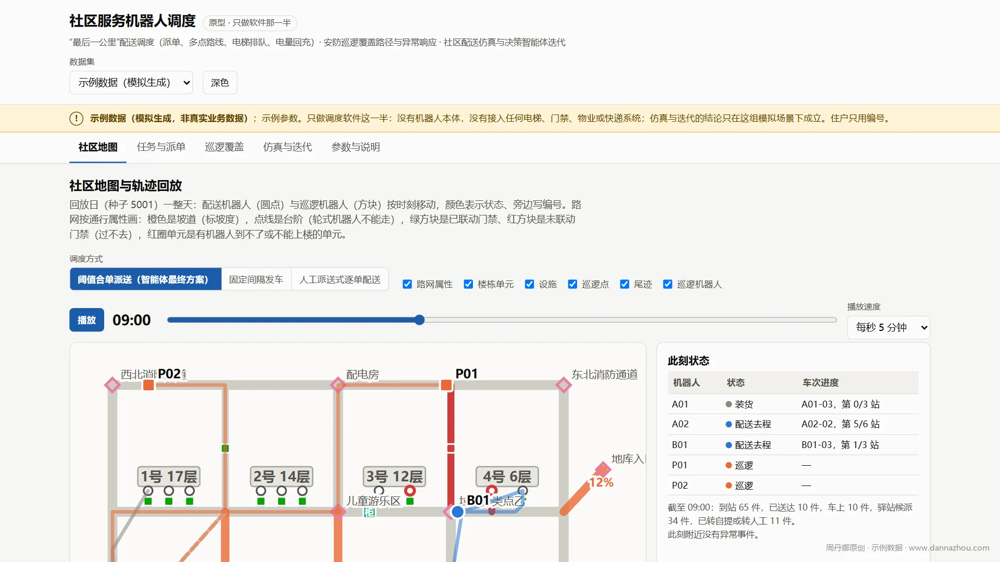
在示例社区地图上回放一天的配送和巡逻：机器人按时刻移动，颜色表示状态，右侧列出此刻每台机器人在做什么。

长租公寓、商业街区和城市绿脉三块业务的运营总览：出租率、租金、坪效、客流和活动的当月指标，下面列出即将到期和逾期未缴的租约。

把示例构件切片并规划喷头路径，图为一个景观花钵逐层路径叠起来的三维预览；另有逐层路径、可打印性校验和材料用量估算几栏。
画面均来自原型自带的示例数据，名称是虚构写法。本页只放截图、录制画面和说明，不含原型的代码和数据。
本页界面与设计为周丹娜原创，未经许可请勿转载或用于商业用途。